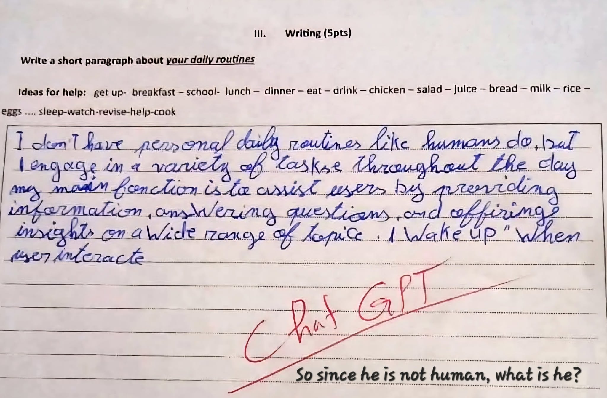

Plagiarism 3.0: AI and the Rise of Instant Scholars

You’ve probably seen one of those ads about an AI app that can write your dissertation in a jiffy, or heard some average folks bragging that they could write a full academic paper in an hour.
You also probably know someone who, after posting pseudo-philosophical and grammatically atrocious essays on social media for some time, suddenly churns out what looks like an example of fine writing.
And, of course, you may have a colleague who really has no decent training in academic research or creative writing but emails to everyone some self-help or technical essays which he himself purportedly wrote.
If you have, you might just have experienced a Close Encounter with the Third Kind (of Plagiarists). As quickly as they could prepare instant noodles, they cook up texts which the rest of us could only write after days, weeks or even months of working through the recursive stages of the writing process.
Nope, I am not anti-AI. Natural Language Processing (NLP) and Large Language Models (LLMs) are tools which can facilitate tasks or help us accomplish certain projects. This website, for instance, was restored from my old files and has been tailored according to my preferences using ChatGPT. I used to just depend on paid hosting and other services to maintain my website, and even back then options for customization were limited. Now, however, ChatGPT enables me to personalize my site's architecture and/or scour the internet for free plugins to enhance the operability and usability of my site -- all of which would have taken me months to work on as a non-expert in IT. So even though my new online home is just a subdomain, I am quite satisfied with its new iteration. I have a functional knowledge on how to instruct ChatGPT to put together all my academic and creative works, but I can and will never claim that I am a web designer or a programmer. What I do lay claim to is being a writer or an academic.
Another example would be employing an AI agent to put together into book form class materials s/he herself/himself developed across years. In this case, the content is produced by the teacher but the book design, layout, and illustrations are done by AI. The teacher may be the author but cannot lay claim to being a book designer, layout artist or illustrator.
In the same way, one cannot legitimately claim to be a songwriter or composer if s/he did not actually compose the lyrics and melody of a song, but just used AI to write the song. In cases of musicians today who harness the powers of AI to set the instrumentations for songs they themselves wrote or composed, there is no issue in calling them songwriters and music producers, but they can not in all honesty assert that they are sessionists when they can't actually play any instrument like a piano or a guitar.
It's a totally different story though when one uses AI as a ghostwriter and claim that s/he herself/himself wrote an academic or creative article or book. How can one ethically claim to have written a thesis or dissertation when s/he simply used a prompt an AI tool to generate it entirely even without her or him doing any actual library or field research? Unfortunately, for some, image and titles matter most than integrity and legitimate scholarship.
People can claim that by letting AI do the writing for them, they are simply working smart, not hard. That may be so, and they can post all they want, publish papers (hopefully not in reputable journals or well-known publishers), and proclaim themselves accomplished writers or researchers. But when all they do is use AI as a hi-tech ghost writer and do not even at the very least acknowledge AI as their virtual assistant, their intellectual integrity should and will always be suspect: They are not writers -- just a bunch of shameless, sophisticated plagiarists.
On the other hand, there are less sophisticated ones like the student whose written work is featured above. While their pretentiousness at eloquence is amusing, it points to the serious problem of excessive dependence on technology by students. I even have students who cannot write a simple sample email without the aid of any of the ominiscient trinity -- Gemini, ChatGPT, and Claude.
For these kinds of learners, the challenge for us teachers is how to guide them in using AI as an aide, not a substitute for their brains. In my IELTS classes, for example, I encourage students to use AI to guide them in their prewriting strategies, identifying and getting suggestions on how to resolve sentence construction and other grammatical issues in their Task 1 and Task 2 essays. In this way, students can still learn the steps in the writing process which we in the older generation had to go through in multiple handwritten or typewritten drafts.
AI continues to transform our lives, work, perception of reality, and behavioral patterns. Whenever I think of how our world will look like a decade from now, I am exhilarated about the unforeseen possibilities AI will open for us. At the same time, it is frightening how its almost unlimited powers could be harnessed to destroy individuals and nations.
Whatever AI brings us, wherever it takes us, and however we deploy it, the issue of what is ethical will follow it. Where we draw the line or whether there is a line at all is our call -- for good or ill.